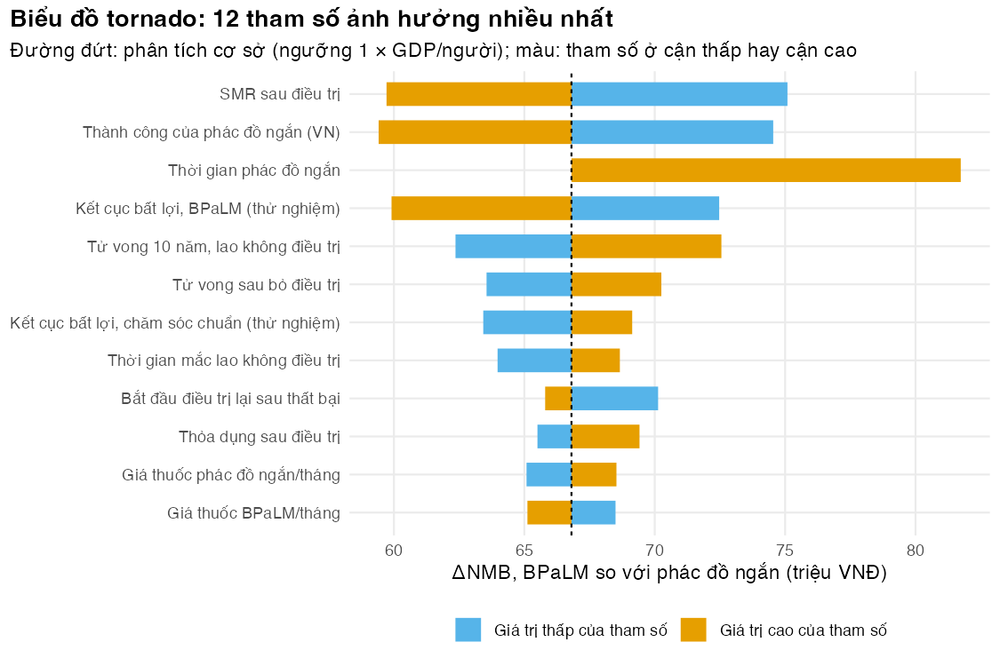

Bài 1: Các loại bất định và phân tích độ nhạy tất định
Tìm xem tham số và giả định nào có thể lật kết luận BPaLM so với phác đồ ngắn 9 tháng
Vì sao bạn nên quan tâm?
Tháng 12/2022 một đợt BPaLM mua qua Global Drug Facility (GDF) của Stop TB Partnership giá US$588; đến tháng 9/2025 chỉ còn US$284, khoảng 7.1 triệu VNĐ, tức 1.3 tháng lương tối thiểu vùng I (European AIDS Treatment Group 2025; ITPC-EECA 2025; Chính phủ 2025). Giá còn có thể đổi nữa, hiệu quả ở Việt Nam có thể khác thử nghiệm, số tử vong khi điều trị có thể bị báo cáo thiếu. Cán bộ Chương trình Chống lao tỉnh cần biết con số nào trong số đó có thể lật kết luận “BPaLM tốt hơn phác đồ ngắn 9 tháng”. Theo mô hình, giá BPaLM phải lên tới khoảng 12.9 triệu VNĐ mỗi tháng, gấp 10.9 lần giá GDF, thì hai phác đồ mới ngang nhau. Bài này dạy cách tìm những con số như vậy trước khi ký đơn hàng.
Mục tiêu học tập
Sau bài này, bạn có thể:
Phân biệt bất định ngẫu nhiên (stochastic uncertainty), bất định tham số (parameter uncertainty), bất định cấu trúc (structural uncertainty) và tính không đồng nhất (heterogeneity), và chọn đúng công cụ cho từng loại.
Thực hiện phân tích độ nhạy một chiều (OWSA) trên lợi ích ròng quy ra tiền gia tăng (incremental net monetary benefit, ΔNMB) và vẽ biểu đồ tornado.
Thực hiện phân tích hai chiều và phân tích ngưỡng (threshold analysis) cho giá thuốc.
Thiết kế phân tích kịch bản (scenario analysis) cho giả định cấu trúc và phân tích phân nhóm cho tính không đồng nhất.
Ý chính
Bốn loại bất định cần bốn cách xử lý: bất định ngẫu nhiên chỉ có trong mô phỏng cấp cá thể (M04), bất định tham số cần PSA, bất định cấu trúc cần kịch bản, tính không đồng nhất cần phân tích phân nhóm (Briggs và c.s. 2012).
Phân tích độ nhạy trên ΔNMB ở một ngưỡng thay vì trên tỷ số chi phí-hiệu quả gia tăng (ICER): ΔNMB là một số liên tục, và dấu của nó chính là quyết định.
Khoảng thấp–cao của OWSA phải mô tả bất định của ước lượng, không phải độ phân tán giữa người bệnh. Cột “Loại khoảng” nói rõ khoảng nào là KTC, khoảng nào là giả định.
Biểu đồ tornado xếp tham số theo độ rộng của ΔNMB. Nó cho biết nên chú ý tham số nào, nhưng không cho biết xác suất quyết định sai.
Chi phí tuyến tính theo giá thuốc, nên giá ngưỡng có công thức đóng; trường hợp chung dùng uniroot().
Giả định cấu trúc có thể làm kết quả thay đổi nhiều hơn mọi tham số đơn lẻ. Báo cáo kịch bản cạnh tornado.
Tính không đồng nhất không phải là bất định: tuổi người bệnh đã biết, nên báo cáo kết quả riêng cho từng phân nhóm.
Nội dung
Bốn loại bất định
Loại
Câu hỏi
Ví dụ trong mô hình MDR/RR-TB
Công cụ
Bất định ngẫu nhiên (bậc một)
Hai người giống hệt nhau có cùng kết cục không?
Hai người cùng uống BPaLM, một người khỏi, một người bỏ điều trị (lost to follow-up)
Chỉ có trong mô phỏng vi mô (M04); mô hình đoàn hệ chỉ tính kỳ vọng
Bất định tham số (bậc hai)
Giá trị thật của tham số là bao nhiêu?
Tỷ lệ kết cục bất lợi của BPaLM ước lượng từ 137 người đánh giá được trong nhánh BPaLM (Nyang’wa và c.s. 2024)
OWSA (bài này), PSA (Bài 3)
Bất định cấu trúc
Mô hình có được dựng đúng không?
RR của thử nghiệm có áp cho tử vong khi điều trị không (bpalm_death_rule, M02 Bài 5)
Phân tích kịch bản; tham số hóa giả định hoặc lấy trung bình các mô hình (Bojke và c.s. 2009)
Tính không đồng nhất
Kết quả có khác giữa các nhóm người bệnh không?
Người bắt đầu điều trị ở tuổi 30 so với 55
Phân tích phân nhóm
Lựa chọn phương pháp, như tỷ lệ chiết khấu, khung thời gian hay ngưỡng, đôi khi được xếp thành một loại riêng. Cách xử lý giống bất định cấu trúc: chạy kịch bản và báo cáo cạnh phân tích cơ sở.
\[
\Delta\text{NMB} = \lambda\,\Delta Q - \Delta C .
\]
\(\Delta\text{NMB} > 0\) nghĩa là chọn BPaLM thay cho phác đồ ngắn. ICER đổi dấu ở hai góc phần tư khác nhau và tiến ra vô cùng khi \(\Delta Q\) gần 0, nên khó đọc khi tham số thay đổi. Mọi phân tích trong module dùng \(\Delta\text{NMB}\) của BPaLM so với phác đồ ngắn; hàm d_nmb(p) trong code/model.R gọi thẳng run_cea() và compare_regimens() của M02.
OWSA và biểu đồ tornado
OWSA đặt một tham số \(\theta_k\) lần lượt ở giá trị thấp và cao, giữ mọi tham số khác ở giá trị cơ sở, rồi ghi lại \(\Delta\text{NMB}\). Biểu đồ tornado vẽ mỗi tham số thành một thanh ngang nối hai giá trị đó, thanh rộng nhất ở trên.
Chất lượng của OWSA phụ thuộc vào khoảng thấp–cao. M03 dùng ba nguồn: khoảng thấp–cao trong params/psa.csv (KTC, khoảng giữa các nghiên cứu, quy ước ±25% cho giá, khoảng minh họa); phân vị 2.5% và 97.5% của phân phối khi tham số được mô tả bằng số đếm hoặc SD công bố (Bài 2); và khoảng thấp–cao của M02 cho các tham số cố định như thời gian phác đồ. Cột range_type ghi bản chất từng khoảng.
OWSA có hai giới hạn: nó bỏ qua tương tác giữa các tham số, và nó không có xác suất. Đặt mọi tham số ở cận 95% không tạo ra một khoảng 95% cho kết quả. Đó là lý do cần PSA.
Phân tích hai chiều và giá ngưỡng
Phân tích hai chiều thay đổi đồng thời hai tham số trên một lưới và tô màu theo phương án được chọn; đường ranh giới là tập các cặp giá trị làm \(\Delta\text{NMB} = 0\). Ta chọn hai đại lượng người mua quan tâm nhất: giá thuốc BPaLM \(c\) và ngưỡng \(\lambda\). Nếu \(M\) là số tháng thuốc BPaLM kỳ vọng được tính tiền cho mỗi người (đã chiết khấu), thì
với \(c_0\) là giá GDF và \(\Delta C_0\) là chênh lệch chi phí ở phân tích cơ sở. Chỉ cần hai lần chạy mô hình để có \(M\).
Kịch bản và phân nhóm
Phân tích kịch bản đổi một giả định có ý nghĩa và chạy lại toàn bộ mô hình. Bài này gom bốn nhóm:
giả định cấu trúc: cách áp RR của thử nghiệm cho tử vong khi điều trị (bpalm_death_rule); không có điều trị lại; kết cục điều trị lại như ở Georgia (Adamashvili và c.s. 2022);
sai lệch số liệu: số liệu chương trình bỏ sót 43% ca tử vong khi điều trị (MacLean và c.s. 2026);
lựa chọn phương pháp: chiết khấu 0% và 5%; khung thời gian 20 năm như đánh giá kinh tế dựa trên TB-PRACTECAL (Sweeney và c.s. 2025); ngưỡng 0.5 × GDP/người theo quan điểm chi phí cơ hội (Woods và c.s. 2016);
lựa chọn số liệu: thỏa dụng khi điều trị thấp hơn (giá trị minh họa 0.70); chi phí nằm viện trung bình US$1,406.80 thay cho trung vị US$707.24 (Nguyễn và Nguyễn 2025).
Phân tích phân nhóm trả lời câu hỏi khác: với từng nhóm người bệnh đã biết đặc điểm, quyết định có khác không? Tuổi bắt đầu điều trị quyết định số năm sống còn lại, nên quyết định số QALY mà BPaLM giữ được.
Thực hành
Nạp hàm, tham số M02 đã bổ sung giá trị dùng chung, bảng PSA và thiết lập của M03. Kiểm tra: load_m03_inputs() không báo lỗi, nghĩa là giá trị cơ sở trong bảng PSA trùng M02 và kb/_shared.
# Vietnamese text in figures needs a UTF-8 locale (Rscript may start in the "C" locale)if (!isTRUE(l10n_info()[["UTF-8"]])) invisible(Sys.setlocale("LC_CTYPE", "en_US.UTF-8"))source("../_shared/R/helpers.R")source("../_shared/R/vn_data.R") # course-wide threshold, discount rate, prices, life tablesource("code/model.R") # also sources ../m02-cohort-markov/code/model.Rlibrary(ggplot2)inp <-load_m03_inputs()p <- inp$p # M02 base case, completed with the shared valuesspec <- inp$spec # M03 PSA tableu <- inp$u # M03 settingsctx <- inp$ctx # shared context (threshold range, discount range)ctab <-attr(ctx, "table")fit <-fit_dist(spec)ptab <-attr(p, "table")c(wtp_million = p$wtp /1e6, disc_rate = p$disc_rate, bpalm_course_million = p$c_drug_bpalm * p$dur_bpalm /1e6)
Chạy phân tích cơ sở cho ba phác đồ. Kiểm tra: d_nmb() cho đúng \(\Delta\text{NMB}\) của compare_regimens() (stopifnot); bảng đường biên hiệu quả cho biết phác đồ nào bị lấn át.
# The three-strategy view (M02 Lesson 5): which regimens lie on the efficiency frontier?base_front <-cea_frontier(base_tab, wtp = p$wtp)base_front[, c("strategy", "status", "nmb", "optimal")]
strategy status nmb optimal
bpalm bpalm frontier 1665424239 TRUE
short short dominated 1598616632 FALSE
long long dominated 1538107563 FALSE
stopifnot(abs(d_nmb(p) - base_cmp$d_nmb) <1e-6)
Ở ngưỡng 1 × GDP/người, BPaLM chiếm ưu thế so với phác đồ ngắn: \(\Delta C\) = -6.68 triệu VNĐ, \(\Delta Q\) = 0.479 QALY, \(\Delta\text{NMB}\) = 66.8 triệu VNĐ mỗi người bệnh. Cả phác đồ ngắn lẫn phác đồ dài hạn đều bị lấn át, nên câu hỏi chính sách thực sự là BPaLM so với phác đồ ngắn đang dùng.
Chạy OWSA cho mọi tham số có khoảng. Kiểm tra: giá trị cơ sở nằm trong khoảng của chính nó (stopifnot); bảng in mười thanh rộng nhất.
ranges <-owsa_ranges(spec, fit, p)# every base value must lie inside its rangestopifnot(all(ranges$low <= ranges$base), all(ranges$base <= ranges$high))owsa <-run_owsa(p, ranges)fmt_val <-function(x) trimws(formatC(signif(x, 3), format ="fg", digits =3, big.mark =","))owsa_show <-data.frame(param = SHORT_LABELS[owsa$name],range =paste(fmt_val(owsa$low), "–", fmt_val(owsa$high)),from = owsa$range_from,nmb_low = owsa$nmb_low /1e6, nmb_high = owsa$nmb_high /1e6, swing = owsa$swing /1e6)knitr::kable(head(owsa_show, 10), digits =1, row.names =FALSE,col.names =c("Tham số", "Thấp – cao", "Loại khoảng", "ΔNMB ở giá trị thấp","ΔNMB ở giá trị cao", "Độ rộng"))
Tham số
Thấp – cao
Loại khoảng
ΔNMB ở giá trị thấp
ΔNMB ở giá trị cao
Độ rộng
SMR sau điều trị
2.21 – 3.84
KTC 95% mượn từ nghiên cứu khác
75.1
59.7
15.4
Thành công của phác đồ ngắn (VN)
0.739 – 0.784
phân vị 2.5-97.5% (cỡ mẫu giả định)
74.5
59.4
15.1
Thời gian phác đồ ngắn
9 – 11
khoảng thấp-cao của M02 (có nguồn)
66.8
81.7
14.9
Kết cục bất lợi, BPaLM (thử nghiệm)
0.0689 – 0.176
phân vị 2.5-97.5% (từ số đếm)
72.5
59.9
12.6
Tử vong 10 năm, lao không điều trị
0.53 – 0.86
khoảng giữa các nghiên cứu
62.4
72.6
10.2
Tử vong sau bỏ điều trị
0.044 – 0.061
KTC 95% công bố
63.6
70.3
6.7
Kết cục bất lợi, chăm sóc chuẩn (thử nghiệm)
0.328 – 0.492
phân vị 2.5-97.5% (từ số đếm)
63.4
69.1
5.7
Thời gian mắc lao không điều trị
2 – 4
khoảng minh họa
64.0
68.7
4.7
Bắt đầu điều trị lại sau thất bại
1 – 12
khoảng minh họa
70.1
65.8
4.3
Thỏa dụng sau điều trị
0.89 – 0.92
KTC 95% công bố
65.5
69.4
3.9
# A bar flips the decision if either end has the opposite sign to the base casebase_sign <-sign(attr(owsa, "base"))n_flip <-sum(sign(owsa$nmb_low) != base_sign |sign(owsa$nmb_high) != base_sign)# How many bars rest on a published 95% CI? The others rest on counts or assumptions.n_ci <-sum(owsa$range_type =="ci95")c(parameters =nrow(owsa), flip_decision = n_flip, bars_on_published_ci = n_ci)
±25% quanh giá công bố (quy ước)
5
khoảng giữa các nghiên cứu
1
khoảng minh họa
7
khoảng thấp-cao của M02 (có nguồn)
2
KTC 95% công bố
4
KTC 95% mượn từ nghiên cứu khác
1
phân vị 2.5-97.5% (cỡ mẫu giả định)
1
phân vị 2.5-97.5% (SE của trung bình từ SD công bố)
1
phân vị 2.5-97.5% (từ số đếm)
8
Trong 30 tham số, không tham số nào làm \(\Delta\text{NMB}\) đổi dấu. Ba thanh rộng nhất là SMR sau điều trị; Thành công của phác đồ ngắn (VN); Thời gian phác đồ ngắn. Thanh rộng nhất dài 15.4 triệu VNĐ, nhỏ hơn nhiều so với \(\Delta\text{NMB}\) cơ sở. Chỉ 4 trên 30 thanh dựa trên KTC 95% công bố; phần còn lại dựa trên số đếm, quy ước hoặc giả định.
Vẽ biểu đồ tornado. Kiểm tra: mỗi tham số có hai đoạn xuất phát từ đường đứt của phân tích cơ sở.
# One bar per parameter, drawn as two segments from the base case: the end reached# when the parameter is LOW and the end reached when it is HIGH (colours show direction).top <-head(owsa, 12)lab_top <-unname(SHORT_LABELS[top$name])tor <-rbind(data.frame(param = lab_top, end = top$nmb_low /1e6, side ="Giá trị thấp của tham số"),data.frame(param = lab_top, end = top$nmb_high /1e6, side ="Giá trị cao của tham số"))tor$param <-factor(tor$param, levels =rev(lab_top))tor$side <-factor(tor$side, levels =c("Giá trị thấp của tham số", "Giá trị cao của tham số"))base_million <-attr(owsa, "base") /1e6stopifnot(nrow(tor) ==2*nrow(top), !anyNA(tor$end))fig_tornado <-ggplot(tor) +geom_segment(aes(x = base_million, xend = end, y = param, yend = param, colour = side), linewidth =6) +geom_vline(xintercept = base_million, colour ="black", linetype ="22") +scale_colour_manual(values =c("Giá trị thấp của tham số"= pal_course[5],"Giá trị cao của tham số"= pal_course[4]), name =NULL) +labs(x ="ΔNMB, BPaLM so với phác đồ ngắn (triệu VNĐ)", y =NULL,title =paste("Biểu đồ tornado:", nrow(top), "tham số ảnh hưởng nhiều nhất"),subtitle ="Đường đứt: phân tích cơ sở (ngưỡng 1 × GDP/người); màu: tham số ở cận thấp hay cận cao") +theme_course()save_fig(fig_tornado, "l01-tornado.png", width =7.5, height =5)

Biểu đồ tornado của ΔNMB, BPaLM so với phác đồ ngắn
Cách đọc: màu cho biết tham số ở cận thấp hay cận cao. Với tham số đứng đầu (“SMR sau điều trị”), giá trị cao làm \(\Delta\text{NMB}\) giảm. Phần lớn lợi ích của BPaLM là thêm người khỏi bệnh và sống tiếp; tử vong sau điều trị càng cao thì mỗi người được cứu sống càng ít năm sống, nên lợi ích càng nhỏ. Thời gian phác đồ ngắn cũng có thanh rộng: nếu phác đồ ngắn kéo dài 11 tháng thay vì 9, nó tốn thêm tiền thuốc, tiền theo dõi và thêm tháng chịu nguy cơ.
Phân tích hai chiều giá BPaLM × ngưỡng, rồi giá ngưỡng. Kiểm tra: công thức tuyến tính và uniroot() cho cùng giá ngưỡng, sai lệch dưới 10 VNĐ (stopifnot).
# Costs are linear in the BPaLM drug price, so one extra run gives the slope:# Delta C rises by `months` VND for each extra VND per month (discounted months billed).# The slope depends on the other parameters (e.g. fewer failures -> more months billed),# so it must be recomputed whenever another parameter changes.months_billed <-function(q) { q1 <- q; q1$c_drug_bpalm <- q$c_drug_bpalm +1e6 (d_nmb(q) -d_nmb(q1)) /1e6}months <-months_billed(p)# Threshold price as a function of the threshold lambda: Delta NMB = 0price_at <-function(wtp) p$c_drug_bpalm + (wtp * base_cmp$d_qaly - base_cmp$d_cost) / monthsp_star <-threshold_price(p) # numerical root at the base thresholdstopifnot(abs(p_star -price_at(p$wtp)) <10) # linear formula and uniroot agreewtp_high <- ctab$high[ctab$name =="wtp"] # 3 x GDP per capita (shared table)wtp_axis <-seq(0, wtp_high, by =2.5e6)price_axis <-seq(0, 20e6, by =0.25e6) # display range of the price axisgrid <-expand.grid(wtp = wtp_axis, price = price_axis)grid$d_nmb <- grid$wtp * base_cmp$d_qaly - (base_cmp$d_cost + months * (grid$price - p$c_drug_bpalm))grid$choice <-ifelse(grid$d_nmb >0, "BPaLM", "Phác đồ ngắn 9 tháng")line_df <-data.frame(wtp = wtp_axis)line_df$price <-price_at(line_df$wtp)line_df <- line_df[line_df$price <=max(grid$price), ] # draw the line inside the grid onlyfig_twoway <-ggplot(grid, aes(wtp /1e6, price /1e6)) +geom_raster(aes(fill = choice), alpha =0.6) +geom_line(data = line_df, colour ="black", linewidth =0.8) +annotate("point", x = p$wtp /1e6, y = p$c_drug_bpalm /1e6, size =3) +scale_fill_manual(values =c("BPaLM"= pal_course[5], "Phác đồ ngắn 9 tháng"= pal_course[4]),name ="Nên chọn") +coord_cartesian(expand =FALSE) +labs(x ="Ngưỡng chi phí-hiệu quả (triệu VNĐ/QALY)", y ="Giá thuốc BPaLM (triệu VNĐ/tháng)",title ="Phân tích hai chiều: giá thuốc BPaLM và ngưỡng",subtitle ="Đường đen: giá ngưỡng; chấm: phân tích cơ sở (giá GDF, 1 × GDP/người)") +theme_course()save_fig(fig_twoway, "l01-twoway.png")round(c(months_billed = months, threshold_price_million = p_star /1e6,times_base_price = p_star / p$c_drug_bpalm, price_at_zero_million =price_at(0) /1e6), 2)
Mỗi người dùng BPaLM được tính tiền khoảng 5.72 tháng thuốc (đã chiết khấu, trừ người tử vong hoặc ngừng thuốc). Ở ngưỡng 1 × GDP/người, giá ngưỡng là 12.87 triệu VNĐ mỗi tháng, gấp 10.9 lần giá GDF. Ngay cả khi \(\lambda = 0\) (chỉ xét tiền), giá ngưỡng vẫn là 2.35 triệu VNĐ, gấp 2.0 lần giá GDF, vì BPaLM bớt được 3 tháng thuốc và theo dõi cùng nhiều đợt nằm viện do biến cố bất lợi. Hệ số góc \(M\) đổi theo các tham số khác (ít thất bại hơn thì nhiều tháng thuốc được tính tiền hơn), nên công thức chỉ dùng được khi mọi tham số khác đứng yên (bài tập 2).
Chạy các kịch bản. Kiểm tra: dòng phân tích cơ sở trùng kết quả ở trên (stopifnot).
# Structural, data and methodological assumptions, changed one at a time.# Each scenario is a parameter list and a threshold.scen <-list(base =list(p = p, wtp = p$wtp))add_scen <-function(key, q, wtp = p$wtp) scen[[key]] <<-list(p = q, wtp = wtp)s <- p; s$bpalm_death_rule <-1; add_scen("rr_death", s)s <- p; s$bpalm_death_rule <-2; add_scen("same_death", s)# Programme data miss some on-treatment deaths (MacLean 2026): inflate the death shares <- p; s$vn_death <- p$vn_death / (1- p$death_unreported); add_scen("underreport", s)# Retreatment pathway of M02: switched off, or with the outcomes seen in Georgias <- p; s$retx_rate_failed <-0; s$retx_rate_ltfu <-0; add_scen("no_retx", s)s <- p; s$retx_outcome_rule <-1; add_scen("retx_georgia", s)s <- p; s$disc_rate <- ctab$low[ctab$name =="disc_rate"]; add_scen("disc_low", s)s <- p; s$disc_rate <- ctab$high[ctab$name =="disc_rate"]; add_scen("disc_high", s)s <- p; s$horizon_age <- p$age_start + u$horizon_years_scen; add_scen("horizon", s)s <- p; s$u_tb <- u$u_tb_scen; add_scen("u_low", s)s <- p; s$c_hosp_usd <- u$c_hosp_usd_mean; add_scen("hosp_mean", s)add_scen("wtp_low", p, wtp = ctx$wtp_low)scen_label <-c(base ="Phân tích cơ sở",rr_death ="RR áp cho cả tử vong khi điều trị (luật 1)",same_death ="Tỷ lệ tử vong tích lũy như phác đồ ngắn (luật 2)",underreport =paste0("Tử vong khi điều trị bị báo cáo thiếu (", fmt_pct(p$death_unreported, 0), ")"),no_retx ="Không điều trị lại sau thất bại hoặc bỏ điều trị",retx_georgia ="Kết cục điều trị lại như Georgia 2011–2014",disc_low =paste0("Chiết khấu ", fmt_pct(ctab$low[ctab$name =="disc_rate"], 0)),disc_high =paste0("Chiết khấu ", fmt_pct(ctab$high[ctab$name =="disc_rate"], 0)),horizon =paste0("Khung thời gian ", u$horizon_years_scen, " năm"),u_low =paste0("Thỏa dụng khi điều trị ", fmt_num(u$u_tb_scen, 2), " (minh họa)"),hosp_mean ="Chi phí nằm viện: trung bình thay trung vị",wtp_low ="Ngưỡng 0.5 × GDP/người")scen_tab <-data.frame(scenario = scen_label[names(scen)], d_cost =NA, d_qaly =NA, d_nmb =NA,row.names =names(scen))for (k innames(scen)) { tab_k <-run_cea(scen[[k]]$p, regimens =c("short", "bpalm")) c_k <-compare_regimens(tab_k, new ="bpalm", ref ="short", wtp = scen[[k]]$wtp) scen_tab[k, c("d_cost", "d_qaly", "d_nmb")] <-c(c_k$d_cost /1e6, c_k$d_qaly, c_k$d_nmb /1e6)}knitr::kable(scen_tab, digits =c(0, 1, 3, 1), row.names =FALSE,col.names =c("Kịch bản", "ΔC (triệu VNĐ)", "ΔQALY", "ΔNMB (triệu VNĐ)"))
# Which assumption moves Delta NMB most, and by how much relative to the base case?scen_shift <- scen_tab$d_nmb[-1] / scen_tab["base", "d_nmb"] -1names(scen_shift) <-rownames(scen_tab)[-1]round(sort(scen_shift), 2)
n_scen_dominant <-sum(scen_tab$d_cost <0& scen_tab$d_qaly >0)# Does the scenario that lowers Delta NMB most move it further than any single OWSA bar?worst_scen <-names(which.min(scen_shift))owsa_max_move <-max(abs(c(owsa$nmb_low, owsa$nmb_high) /1e6- scen_tab["base", "d_nmb"]))struct_beats_owsa <-abs(scen_tab[worst_scen, "d_nmb"] - scen_tab["base", "d_nmb"]) > owsa_max_movec(worst_scenario_shift = scen_tab[worst_scen, "d_nmb"] - scen_tab["base", "d_nmb"],largest_owsa_move = owsa_max_move)
Các kịch bản đưa \(\Delta\text{NMB}\) đi từ 33.2 đến 108.9 triệu VNĐ, rộng hơn khoảng của mọi thanh OWSA (59.4 đến 81.7). Giả định làm \(\Delta\text{NMB}\) giảm nhiều nhất là “Tỷ lệ tử vong tích lũy như phác đồ ngắn (luật 2)” (giảm 50%), kế đó là “Ngưỡng 0.5 × GDP/người” (giảm 45%). Như vậy, cách áp RR của thử nghiệm cho tử vong, một giả định mà không thử nghiệm nào đo trực tiếp, kéo kết quả đi xa hơn mọi thanh OWSA. Tắt điều trị lại làm \(\Delta\text{NMB}\) tăng 25%: khi người thất bại hay bỏ điều trị không được cứu lại, tránh được thất bại ngay từ đầu càng đáng giá. Không kịch bản nào làm BPaLM mất ưu thế.
Phân tích phân nhóm theo tuổi bắt đầu điều trị. Kiểm tra: người trẻ hơn được thêm nhiều QALY hơn (stopifnot).
# Heterogeneity: separate results for subgroups that differ in age at the start of treatmentages <-c(ptab$low[ptab$name =="age_start"], p$age_start, ptab$high[ptab$name =="age_start"])sub_tab <-data.frame(age = ages, d_cost =NA, d_qaly =NA, d_nmb =NA)for (i inseq_along(ages)) { s <- p; s$age_start <- ages[i] c_i <-compare_regimens(run_cea(s, regimens =c("short", "bpalm")), new ="bpalm", ref ="short", wtp = p$wtp) sub_tab[i, c("d_cost", "d_qaly", "d_nmb")] <-c(c_i$d_cost /1e6, c_i$d_qaly, c_i$d_nmb /1e6)}knitr::kable(sub_tab, digits =c(0, 2, 3, 1),col.names =c("Tuổi bắt đầu điều trị", "ΔC (triệu VNĐ)", "ΔQALY", "ΔNMB (triệu VNĐ)"))
Tuổi bắt đầu điều trị
ΔC (triệu VNĐ)
ΔQALY
ΔNMB (triệu VNĐ)
30
-6.68
0.718
96.8
45
-6.68
0.479
66.8
55
-6.67
0.280
41.8
stopifnot(all(diff(sub_tab$d_qaly) <0)) # younger people gain more QALYs
Chênh lệch chi phí gần như không đổi giữa các nhóm tuổi (khác nhau không quá 6 nghìn VNĐ), nhưng \(\Delta Q\) giảm từ 0.72 ở tuổi 30 xuống 0.28 ở tuổi 55. Quyết định giống nhau ở mọi nhóm tuổi; chỉ độ lớn của lợi ích khác nhau. Điều đó quan trọng cho tác động ngân sách và công bằng (M10), không phải cơ sở để phân bổ phác đồ theo tuổi.
Mẹo thực hành
Viết một hàm trả về đúng một con số (ở đây d_nmb()), rồi mọi phân tích độ nhạy chỉ còn là gọi hàm đó với một danh sách tham số đã sửa.
Ghi bản chất của từng khoảng thấp–cao ngay trong bảng kết quả (cột “Loại khoảng”). Người đọc cần biết thanh nào dựa trên KTC, thanh nào dựa trên quy ước.
Tìm cấu trúc tuyến tính trước khi dùng uniroot(): chi phí luôn tuyến tính theo đơn giá, nên hai lần chạy cho cả một đường ngưỡng.
Đặt kịch bản và tornado cạnh nhau trong báo cáo. Nếu kịch bản rộng hơn mọi thanh, người đọc phải biết điều đó.
Lỗi thường gặp
Dùng khoảng tứ phân vị hoặc min–max của dữ liệu cá nhân làm khoảng OWSA: đó là độ phân tán giữa người bệnh, rộng hơn nhiều so với bất định của trung bình (Bài 2).
Vẽ tornado trên ICER: khi \(\Delta Q\) gần 0 hoặc đổi dấu, thanh của ICER nhảy qua vô cùng. Dùng \(\Delta\text{NMB}\).
Đưa tuổi vào PSA như một tham số bất định: tuổi đã biết; trộn các tuổi vào PSA che mất khác biệt giữa các phân nhóm.
Coi “không thanh nào đổi dấu” là bằng chứng chắc chắn: OWSA không xét các tham số cùng thay đổi, và không xét giả định cấu trúc.
Dùng lại công thức tuyến tính sau khi đổi tham số khác: hệ số góc \(M\) đổi theo; tính lại, hoặc dùng uniroot().
Bài tập
(Dễ) Lặp lại OWSA nhưng đo độ rộng của \(\Delta Q\) thay vì \(\Delta\text{NMB}\). Năm tham số nào đứng đầu? Vì sao không có tham số chi phí nào?
Năm tham số đứng đầu là SMR sau điều trị; Thành công của phác đồ ngắn (VN); Thời gian phác đồ ngắn; Kết cục bất lợi, BPaLM (thử nghiệm); Tử vong 10 năm, lao không điều trị. Tham số chi phí chỉ thay đổi \(\Delta C\), nên độ rộng \(\Delta Q\) của chúng bằng 0; stopifnot kiểm tra điều đó.
(Vừa) Giá ngưỡng của BPaLM thay đổi thế nào khi hiệu quả trong thử nghiệm kém đi, từ cận dưới của khoảng 95% đến mức bằng chăm sóc chuẩn (RR = 1)?
Lời giải
# Exercise 2: threshold price of BPaLM as the trial effect weakens, up to RR = 1.# Delta NMB stays linear in the price for every value of unf_bpalm_trial, but the slope# (months billed) changes with it, so it is recomputed for each value.unf_grid <-seq(ranges$low[ranges$name =="unf_bpalm_trial"], p$unf_soc_trial, length.out =6)price_tab <-data.frame(unf_bpalm_trial = unf_grid, rr = unf_grid / p$unf_soc_trial,months =NA, exact =NA, own_slope =NA, base_slope =NA, d_qaly =NA)for (i inseq_along(unf_grid)) { q <- p; q$unf_bpalm_trial <- unf_grid[i] price_tab$months[i] <-months_billed(q) price_tab$exact[i] <-threshold_price(q) # uniroot price_tab$own_slope[i] <- q$c_drug_bpalm +d_nmb(q) / price_tab$months[i] # linear, own slope price_tab$base_slope[i] <- q$c_drug_bpalm +d_nmb(q) / months # linear, base-case slope price_tab$d_qaly[i] <-d_qaly_of(q)}price_tab$threshold_price_million <- price_tab$exact /1e6round(price_tab[, c("unf_bpalm_trial", "rr", "d_qaly", "months", "threshold_price_million")], 3)
stopifnot(all(diff(price_tab$exact) <0)) # weaker effect -> lower threshold pricestopifnot(max(abs(price_tab$own_slope - price_tab$exact)) <10) # shortcut with its own slope = uniroot# The shortcut with the BASE-CASE slope is wrong when another parameter has changederr_base_slope <-max(abs(price_tab$base_slope - price_tab$exact)) /1e6round(c(max_error_million_VND_per_month = err_base_slope), 2)
max_error_million_VND_per_month
0.34
# At RR = 1 the trial effect is gone; M02 then applies the pooled Vietnamese outcomes# (all regimens, including the long one) to BPaLM, which are worse than the short regimen'srr1 <- price_tab[nrow(price_tab), ]rr1_worse <- rr1$d_qaly <0
Giá ngưỡng giảm từ 13.7 xuống 7.2 triệu VNĐ mỗi tháng. Ở RR = 1, \(\Delta Q\) vẫn dương, 0.209 QALY, và giá ngưỡng vẫn gấp 6.1 lần giá GDF. Lý do nằm ở cấu trúc: theo luật 0 của M02, nguy cơ tử vong do lao mỗi tháng khi dùng BPaLM bằng phác đồ ngắn, nên đợt điều trị ngắn hơn 3 tháng tự động có ít ca tử vong hơn. Nếu luật này sai (kịch bản luật 2), lợi ích giảm mạnh; một kết luận vững không được phụ thuộc vào riêng giả định đó. Số tháng thuốc được tính tiền cũng đổi theo (từ 5.77 xuống 5.39), nên dùng lại \(M\) của phân tích cơ sở sẽ sai tới 0.34 triệu VNĐ mỗi tháng; công thức với hệ số góc tính lại trùng uniroot() (stopifnot).
(Khó) Đặt giá BPaLM bằng giá ngưỡng (làm tròn đến 100,000 VNĐ) rồi vẽ lại tornado. Có bao nhiêu thanh cắt qua 0? Điều đó nói gì về giới hạn của OWSA?
Lời giải
# Exercise 3: tornado at a negotiated price near the threshold (the scenario of Lessons 3-5)price_hi <-price_scenario(p, u$price_round)p_hi <- p; p_hi$c_drug_bpalm <- price_hiranges_hi <- ranges[ranges$name !="c_drug_bpalm", ] # the price is now fixedowsa_hi <-run_owsa(p_hi, ranges_hi)flip_hi <- owsa_hi$name[sign(owsa_hi$nmb_low) !=sign(owsa_hi$nmb_high)]c(price_hi_million = price_hi /1e6, base_d_nmb_million =round(attr(owsa_hi, "base") /1e6, 2),n_parameters =nrow(owsa_hi), n_flip =length(flip_hi))
# the five widest bars: at a knife-edge decision many bars cross zerodata.frame(param = SHORT_LABELS[head(owsa_hi$name, 5)],nmb_low =round(head(owsa_hi$nmb_low, 5) /1e6, 1),nmb_high =round(head(owsa_hi$nmb_high, 5) /1e6, 1), row.names =NULL)
param nmb_low nmb_high
1 Thành công của phác đồ ngắn (VN) 7.7 -7.7
2 SMR sau điều trị 8.1 -7.3
3 Thời gian phác đồ ngắn -0.2 14.5
4 Kết cục bất lợi, BPaLM (thử nghiệm) 4.9 -6.3
5 Tử vong 10 năm, lao không điều trị -4.6 5.6
Ở giá 12.9 triệu VNĐ, \(\Delta\text{NMB}\) cơ sở gần bằng 0 và 24 trên 29 thanh cắt qua 0. Khi quyết định nằm sát ngưỡng, hầu như tham số nào cũng “đổi được quyết định”, nên tornado không còn phân biệt được điều gì. Câu hỏi đúng lúc này là: xác suất chọn sai là bao nhiêu, và giảm bất định ở tham số nào thì đáng tiền nhất? Đó là PSA (Bài 3) và EVPPI (Bài 5).
Tài liệu tham khảo
Adamashvili, N., D. Baliashvili, G. Kuchukhidze, A. D. Salindri, R. R. Kempker, H. M. Blumberg, N. Lomtadze, Z. Avaliani, và M. J. Magee. 2022. “Low BMI increases all-cause mortality rates in patients with drug-resistant TB”. The International Journal of Tuberculosis and Lung Disease 26 (4): 326–33. https://doi.org/10.5588/ijtld.21.0450.
Bojke, Laura, Karl Claxton, Mark Sculpher, và Stephen Palmer. 2009. “Characterizing structural uncertainty in decision analytic models: a review and application of methods”. Value in Health 12 (5): 739–49. https://doi.org/10.1111/j.1524-4733.2008.00502.x.
Briggs, Andrew H., Milton C. Weinstein, Elisabeth A. L. Fenwick, Jonathan Karnon, Mark J. Sculpher, và A. David Paltiel. 2012. “Model parameter estimation and uncertainty analysis: a report of the ISPOR-SMDM Modeling Good Research Practices Task Force Working Group-6”. Medical Decision Making 32 (5): 722–32. https://doi.org/10.1177/0272989X12458348.
Cục Thống kê (Bộ Tài chính). 2026. “Họp báo công bố tình hình kinh tế – xã hội quý IV và năm 2025”. 5 Tháng Giêng 2026. https://www.nso.gov.vn/?p=59699.
MacLean, Emily Lai-Ho, Yen Ngoc Pham, Cuong Duc Pham, Binh Cam Nguyen, Frances L. Garden, Tasnim Hasan, Thu-Anh Nguyen, và c.s. 2026. “Long-term outcomes among people with multidrug-resistant tuberculosis in Vietnam: a prospective cohort study”. Clinical Infectious Diseases 81 (6): e623–31. https://doi.org/10.1093/cid/ciaf363.
Nguyễn, Đức Hạnh, và Thị Bình An Nguyễn. 2025. “Chi phí điều trị nội trú của người bệnh lao kháng thuốc tại Bệnh viện Phổi Trung ương năm 2024”. Tạp chí Y học Cộng đồng 66 (Số đặc biệt 8): 144–50. https://doi.org/10.52163/yhc.v66iCD8.2571.
Nyang’wa, Bern-Thomas, Catherine Berry, Emil Kazounis, Ilaria Motta, Nargiza Parpieva, Zinaida Tigay, Ronelle Moodliar, và c.s. 2024. “Short oral regimens for pulmonary rifampicin-resistant tuberculosis (TB-PRACTECAL): an open-label, randomised, controlled, phase 2B–3, multi-arm, multicentre, non-inferiority trial”. The Lancet Respiratory Medicine 12 (2): 117–28. https://doi.org/10.1016/S2213-2600(23)00389-2.
Ong, The Due, Anh Son Dao, Quoc Trung Ly, Thi Tuyet Mai Kieu, và Hong Minh Le. 2026. “Cost-effectiveness of luseogliflozin for the management of type 2 diabetes mellitus in Vietnam: a Markov model analysis from the Vietnam social health insurance perspective”. Cost Effectiveness and Resource Allocation 24 (1). https://doi.org/10.1186/s12962-026-00797-y.
Sweeney, Sedona, Yoko V. Laurence, Catherine Berry, Maninder Pal Singh, Matthew Dodd, Katherine Fielding, Emil Kazounis, và c.s. 2025. “24-week, all-oral regimens for pulmonary rifampicin-resistant tuberculosis in TB-PRACTECAL trial sites: an economic evaluation”. The Lancet Global Health 13 (2): e355–63. https://doi.org/10.1016/S2214-109X(24)00467-4.
Woods, Beth, Paul Revill, Mark Sculpher, và Karl Claxton. 2016. “Country-Level Cost-Effectiveness Thresholds: Initial Estimates and the Need for Further Research”. Value in health : the journal of the International Society for Pharmacoeconomics and Outcomes Research 19 (8): 929–35. https://doi.org/10.1016/j.jval.2016.02.017.
Kịch bản video (~14 phút)
#
Slide
Lời giảng chính
Hình/Code
1
Giá BPaLM thay đổi nhanh
giá GDF 2022 so với 2025; câu hỏi: con số nào lật được kết luận?
callout đầu bài
2
Kết quả cơ sở
BPaLM chiếm ưu thế so với phác đồ ngắn; phác đồ dài hạn bị lấn át
chunk l01-base
3
Bốn loại bất định
ngẫu nhiên, tham số, cấu trúc, không đồng nhất; mỗi loại một công cụ
bảng bốn loại
4
Vì sao dùng ΔNMB
dấu = quyết định; ICER nhảy qua vô cùng
công thức ΔNMB
5
OWSA
một tham số một lần; loại khoảng của từng thanh
chunk l01-owsa
6
Biểu đồ tornado
SMR, thành công phác đồ ngắn, thời gian phác đồ ngắn; không thanh nào đổi dấu
figs/l01-tornado.png
7
Hai chiều và giá ngưỡng
giá BPaLM × ngưỡng; công thức tuyến tính; gấp bao nhiêu lần giá GDF
figs/l01-twoway.png
8
Kịch bản
luật áp RR cho tử vong, điều trị lại, báo cáo thiếu, chiết khấu, ngưỡng 0.5 × GDP